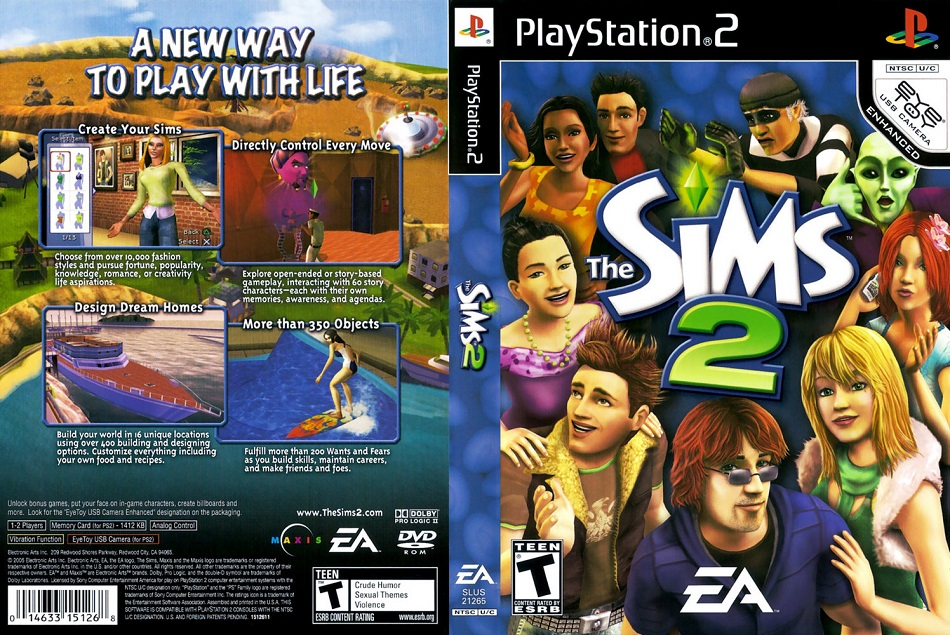
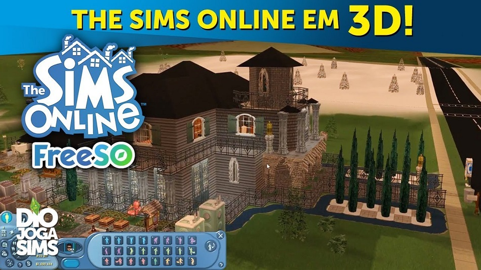

PRINCIPAIS JOGOS DA FRANQUIA
A franquia ocupa o primeiro lugar entre os títulos mais vendidos de todos os tempos com The Sims 2, seguido pelo The Sims original na segunda posição. Nestes 15 anos desde o primeiro lançamento, o game recebeu diversos capítulos. Confira os principais jogos da franquia.
-

The Sims 4
O mais recente capítulo da franquia foi lançado em 2014 com uma série de novidades, o foco é tornar os Sims cada vez mais complexos, com profundas aspirações e personalidades. Reduziram o jogo a sua base e tornaram tudo mais fácil e acessível.
-
The Sims 3
The Sims 3 se focou em aprofundar ainda mais a base da jogabilidade. Os Sims ficaram mais complexos, com ambições e personalidades, enquanto as casas e os móveis ganharam mais detalhes e opções de personalização.
-

The Sims 2
The Sims 2 trouxe uma experiência familiar ao expandir o conteúdo do original, mas também com grandes novidades, como gráficos totalmente em 3D e o sistema de envelhecimento que permitia que seu Sim tivesse várias fases em sua vida.
-

The Sims Online
Aproveitando o sucesso de The Sims, a Electronic Arts planejou lançar uma versão online do jogo que o convertesse em um MMO tradicional. The Sims Online reproduzia bem demais a realidade, fazendo o jogo não se popularizar tanto.
RECURSOS PRINCIPAIS
Sims únicos – Você tem uma variedade de Sims para personalizar, todos eles com aparências distintas, personalidades dinâmicas e aspirações inspiradoras. Use recursos poderosos de personalização para dar vida à sua imaginação. Crie você mesmo, suas celebridades favoritas, suas fantasias ou seus amigos! Troque as roupas dos seus Sims para refletir seu humor, crie histórias que aprofundam o seu mundo e dê propósito às vidas deles com traços e aspirações.
Construa a casa perfeita – Projete e construa facilmente as casas perfeitas para os seus Sims usando o Modo Construção. Crie a casa dos seus sonhos (e dos sonhos deles) planejando o layout, escolhendo a mobília e alterando a paisagem e o terreno. Você pode até construir uma piscina, subsolo e jardim, ou reconstruir com novas ideias e projetos!
Jogue com a vida – Controle os momentos divertidos e envolventes das vidas dos seus Sims, de seus relacionamentos às suas carreiras. Suas escolhas definem todos os aspectos das vidas deles, desde o nascimento e da fase de bebê até a vida adulta. Nesse período, desenvolva as habilidades dos seus Sims, pratique passatempos originais, leve-os para aventuras, inicie novas famílias e muito mais.
Adicione novas experiências – Use a Galeria para encontrar inspiração em uma comunidade de jogadores iguais a você, onde é possível adicionar conteúdo ao jogo e compartilhar suas próprias criações. Faça download, curta e deixe comentários para os seus Sims, casa e cômodos favoritos. Participe da comunidade e participe da diversão!